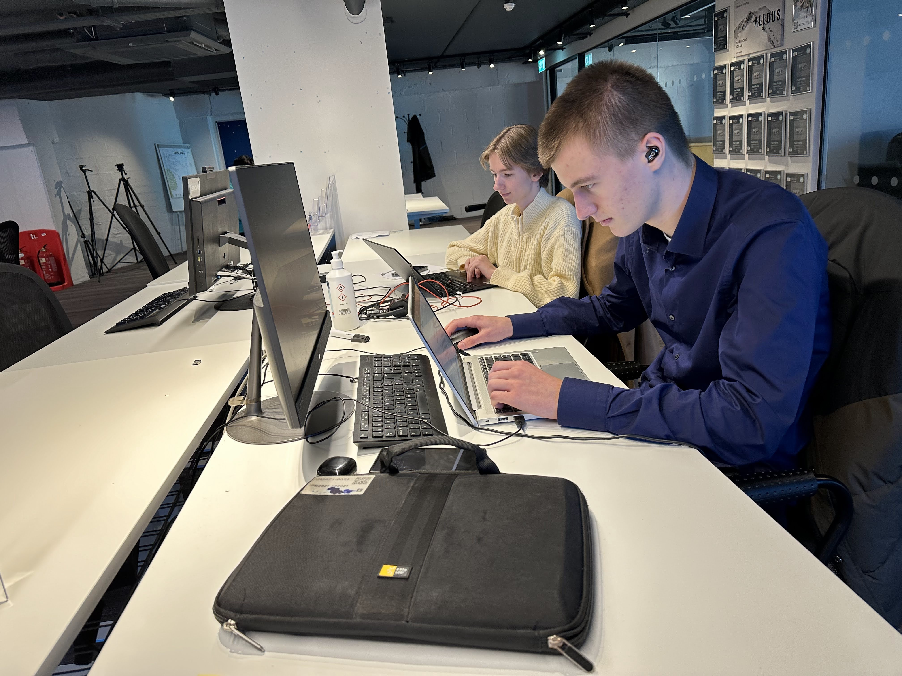
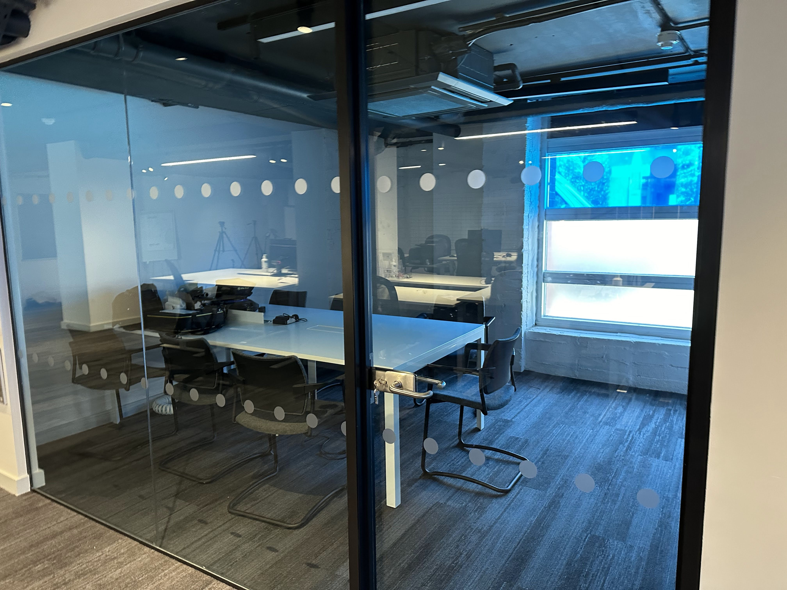
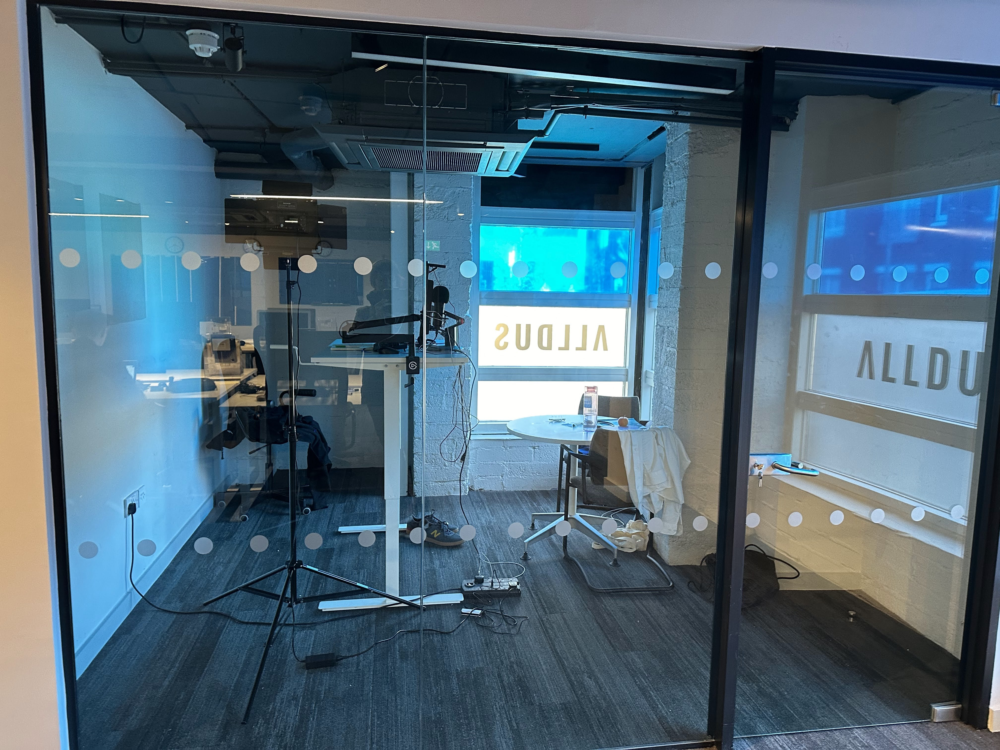

Vandaag was de 2de dag in 'The Office' maar deze blog zal over zowel de eerste als de tweede dag gaan. Het was namelijk niet wat ik verwacht had.
 
Ik kwam aan uin het gebouw dat mij vrij donker leek en er was één persoon aanwezig genaamd Liam. Hij zei hallo, liet ons onze bureau zien en dat was het laatste wat we van hem hoorden, niet echt een warm welkom dus. We hadden de dag er voor werk gekregen via email dat verder bouwde op dat wat we thuis moesten doen op de 15de. Hier heb ik dus de hele dag aan gewerkt. Ik heb deze dag ook twee teamscalls gedaan met mijn opdrachtgever en hij vertelde mij dus via dit kanaal wat mijn opdract was. Dit was heel lastig want er was niemand in het gebouw die mij kon helpen indien ik vast zat met de website en met het programma dat ik gebruikte. Indien ik een vraag had moest ik dit op mail zetten en duurde het dus meestal meer dan een halfuur voordat ik een antwoord kreeg. Het is tot nu toe dus nog geen goede ervaring in het bedrijf en ik heb het gevoel dat mijn stage niet bereikt wat het moet bereiken namelijk het bedrijfsleven leren kennen, leren communiceren en samenwerken, Engels praten... Ik hoop dat het werk nog wat gevarieerder wordt en dat er meer mensen naar het gebouw gaan komen voor mij misschien ook te begeleiden.

In het algemeen is het dus een slechte ervaring en heb ik het gevoel dat ik niet voldoende bijleer. Ik hoop op enige verbetering